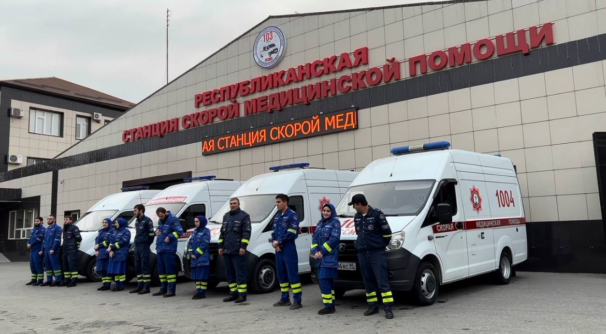

Посмотрите машину так, будто стоите в ней: поворачивайте обзор, приближайте, открывайте отмеченные узлы. Тур показывает не только вид салона, но и назначение каждого элемента — где стоит монитор, куда уходят данные, как устроена погрузка.

Автомобиль скорой помощи обычно видят снаружи. Что внутри и почему устроено именно так — знают только бригады. Тур закрывает этот разрыв: главный врач, специалист по закупкам, проектировщик или студент может изучить салон до того, как окажется в нём, и понять логику размещения каждого прибора.
Сопоставить классы B и C по оснащению и компоновке до решения о закупке.
Разобрать штатное размещение укладок и приборов, в том числе при переходе на другой класс машины.
Увидеть требования к эргономике и к телемедицинскому контуру в привязке к конкретным узлам салона.
Показать салон группе без вывода машины из смены.
Салон скорой — это рабочее место, где счёт идёт на секунды, а пространство измеряется сантиметрами. Всё, что бригада берёт в руки, должно находиться там, где рука его ищет, и держаться на месте при торможении.
Поворотное кресло у изголовья с фиксацией положений: доступ к голове и грудной клетке пациента сохраняется в движении, врач пристёгнут.
Места для второго члена бригады и сопровождающего. Сложенные — освобождают проход к задним дверям и место для носилок.
Рабочий режим для манипуляций, дежурный для транспортировки, отдельная подсветка входной группы. Без бликов на экранах приборов.
Штатные места вдоль борта: и то и другое достаётся одним движением, не перекрывая доступ к пациенту.
Вакуумный матрас, складные носилки, шины убираются так, чтобы проход оставался свободным.
Для того, что нужно мгновенно: видно содержимое, рука не ищет защёлку.
Закрывающиеся створки для расходников: содержимое видно через окно, но не разлетается в движении.
Единый интерфейс крепления оборудования: конфигурация меняется под профиль бригады без переделки салона.
Высота и ширина, при которых у каталки могут работать двое, не мешая друг другу.
Опора с обеих сторон проёма при входе и выходе на неровной площадке.
Снижает высоту входа при погрузке и посадке сопровождающего, убирается при начале движения.
Меньше вибрации при перевозке и возможность опустить кузов при погрузке. Прямо влияет на качество ЭКГ, снятой в движении.
Климат в салоне, точки питания для аппаратуры, места для документов и планшета бригады.
Смысл стандартизации простой: фельдшер, пересевший в другую машину, находит нужное там же, где в предыдущей. Деление автомобилей на классы A, B и C закреплено ГОСТ Р 33665-2015 факт; состав укладок сверяется по действующим порядкам оказания помощи — в туре он показан как проектный, а не как утверждённый перечень.
Чем чаще берут — тем ближе к изголовью и на уровне руки сидящего.
Укладки сгруппированы так, чтобы на один повод не собирать предметы из трёх разных мест.
Штатные места повторяются от автомобиля к автомобилю — это и экономит секунды, и снижает число ошибок.
Комплектность укладок, остаток кислорода, заряд аппаратуры, фиксация каталки — по единому списку.
Набор для расширенного пособия: обеспечение проходимости дыхательных путей, сосудистый доступ, препараты интенсивной терапии.
Штатное место у изголовья: берётся, не вставая с кресла и не разворачиваясь к дверям.
Основная укладка класса C, в классе B присутствует в сокращённом составе.
Базовый набор выездной бригады: то, с чем идут к пациенту в квартиру или на улицу, не возвращаясь к машине.
Ближе всего к дверям: её берут первой и выносят чаще остальных.
Одинакова по составу и в классе B, и в классе C — это опора всей стандартизации.
Собраны по профилю вызова и лежат на штатных местах.
Приём родов вне стационара и первичная помощь новорождённому.
Иммобилизация, остановка кровотечения, обезболивание на месте происшествия.
Размеры и дозировки для детей — отдельный набор, а не уменьшенный взрослый.
Защита бригады: средства индивидуальной защиты и обработки при контакте с биологическими жидкостями.
ЭКГ, SpO₂, неинвазивное давление; дефибрилляция в ручном и автоматическом режиме с записью эпизода.
Вентиляция в движении с контролем параметров дыхания, автономным питанием и подключением к бортовому кислороду.
Централизованная разводка с точками подключения у рабочих мест и контролем остатка на панели.
Шприцевые насосы и инфузоматы на едином креплении: точная дозировка при тряске.
Санация дыхательных путей; питание от бортовой сети и от собственного аккумулятора.
Ультразвук в месте оказания помощи: свободная жидкость, оценка сердца и лёгких, сосудистый доступ.
Газы крови, электролиты, лактат, маркёры повреждения миокарда — результат за минуты.
Видеосвязь с консультантом, карта вызова, управление трансляцией данных с приборов.
Разработка салона автомобиля СМП как автономного лечебно-диагностического комплекса с реализацией телемедицинских технологий. Цель — создание автомобиля, способного оказать помощь и провести диагностику на месте, с дистанционным участием профильного специалиста.
Путь данных от пациента в салоне до профильного специалиста. Центральное звено — оперативный центр в Грозном. Числовые значения помечены как проектное требование: они закладываются в ТЗ и проверяются на испытаниях, а не измерены.
Монитор, ИВЛ, дефибриллятор на единой шине. Бортовой сервер с буфером записи. Две камеры и гарнитура с шумоподавлением.
Агрегация LTE/5G нескольких операторов, спутниковый резерв для горных районов, приоритет витальных данных над видео.
Приём вызовов 103, пульт врача-консультанта, автоподъём карты вызова, маршрутизация к профильному специалисту.
Предуведомление приёмного отделения, подготовка операционной, передача в МИС, обратная связь об исходе.
От снятия показателя до отображения на пульте консультанта. требование
Минимум для оценки состояния и контроля манипуляции. требование
Помощь идёт автономно, данные догружаются при восстановлении канала. требование
Определяется на этапе 04, проверяется на этапе 06. допущение
Раздел под публикации о станции и о проекте. Заполняется ссылками на реальные материалы — выдуманных заголовков здесь нет и быть не должно.
Нажмите на плитку и выберите снимок — он подставится прямо в браузере, локально, никуда не отправляясь. Так можно собрать галерею и посмотреть, как сайт выглядит с настоящими фотографиями, до того как отдавать файлы в работу. Подписи на плитках — это список того, что нужно снять.
Форма собирает письмо и открывает его в вашей почтовой программе. Отдельного сервера у страницы нет — при размещении на хостинге станции её подключают к почте или к сервису форм.
Ссылки, указанные на официальном сайте станции.